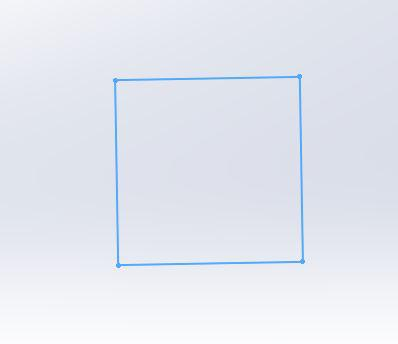
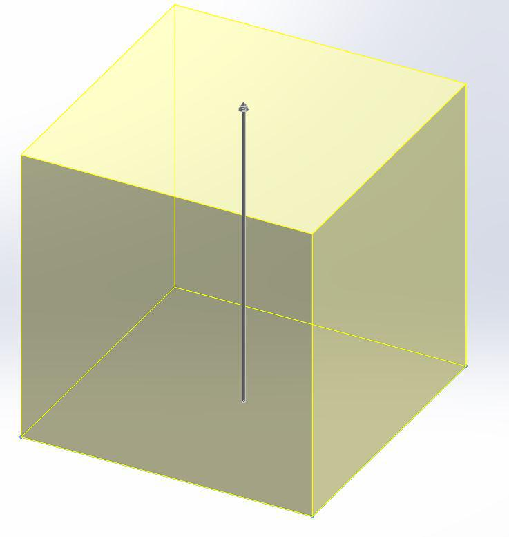

Sketching the 3D Model
Starting the Sketch
-
Today you will be making a cube with a sphere inside of it. To begin, select the "Sketch" tab in the top left corner. Click "Start Sketch" and choose the top plane as your sketch plane.

Sketching the Cube
-
To start constructing the cube, first create a rectangle on the top plane.
 -
Next, you need to extrude your box into a cube. Extrude is a feature that turns a 2D object into a 3D object by stretching it out in one direction. You can use the "Extrude" tool on the features tool bar to use this feature. Set your extrude depth to 1 inch.
 -
Next, you need to create another sketch on one face of the cube to create the windows that allow you to see the sphere. Make a circle centered on the plane of diameter .7 inches, as shown below.


-
Use the "Cut Extrude" tool to cut this window. Select through all for the extrude cut, and repeat until you have a window on each face.

Sketching the Sphere
-
With the cube finished, it is now time to make the sphere and place it inside. Start by sketching a semicircle on one of the faces. Do a rotation extrude around the center axis of the semicircle to create your sphere.

-
With the extrude complete, you should have a sphere flush with one of the windows located inside the cube.

Saving the Sketch
-
Now that you have created the geometry that the printer can model, you need to save the file in a filetype which the CubePro can interpret and build. Select from "File" the option "Save As." Then, save the file as a .stl file. You will then import this file into the CubePro software so that it can be oriented properly for the machine to print.
Once You've Finished...
Click here for the next step.